about make a mark
hi, thx for your interest!
make a mark is a simple tool for creating modern 88x31 badges for websites, readmes and more.
classic 88x31 badges are often shared as pngs or gifs. make a mark makes svg badges instead. you can use these badges on your website, personal blog, readme or wherever you like.
there are ready-to-use palettes and characters to choose from. you can also create your own custom palette.
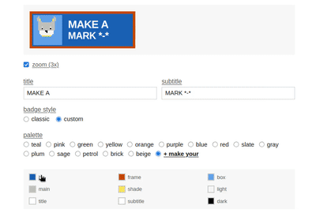
custom palettes give you full creative control. by matching certain color variables (like blending your character into the background), you can mask elements and craft minimalist badges. want just text? yeah, you can do that too.
and here are the characters in the sage palette.
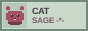
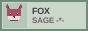
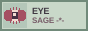
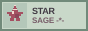
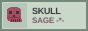
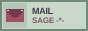
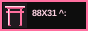
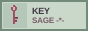
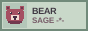
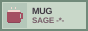
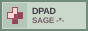
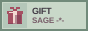
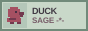
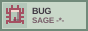
when you’re done, download your badge as an svg or copy its svg or data uri.
it’s free and open source.